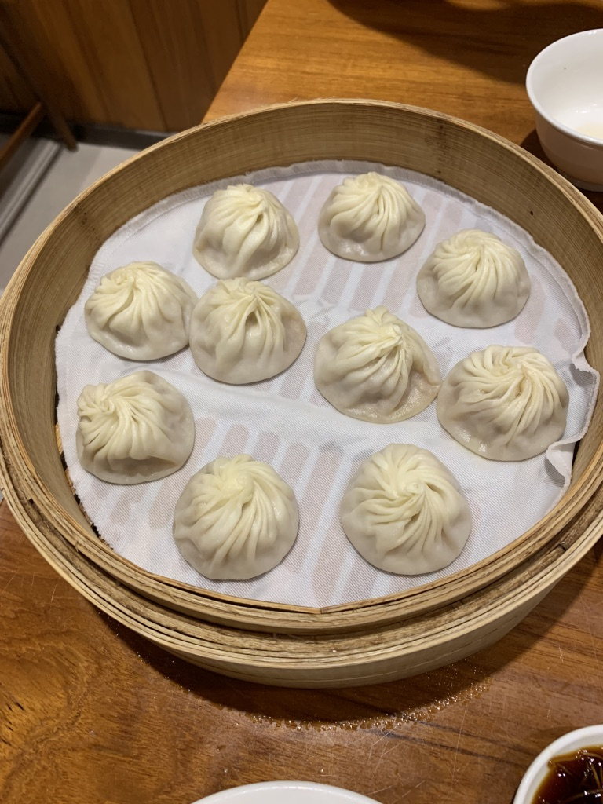
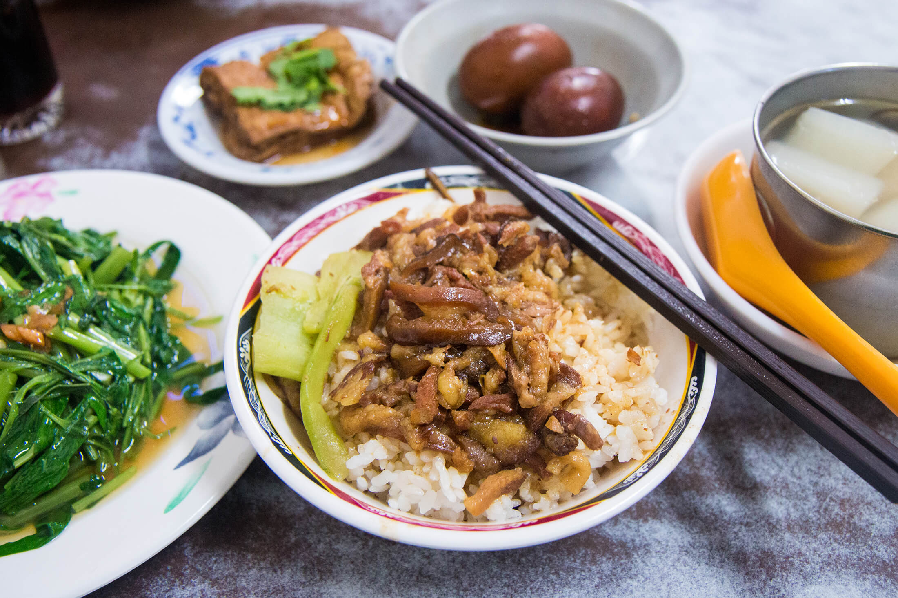
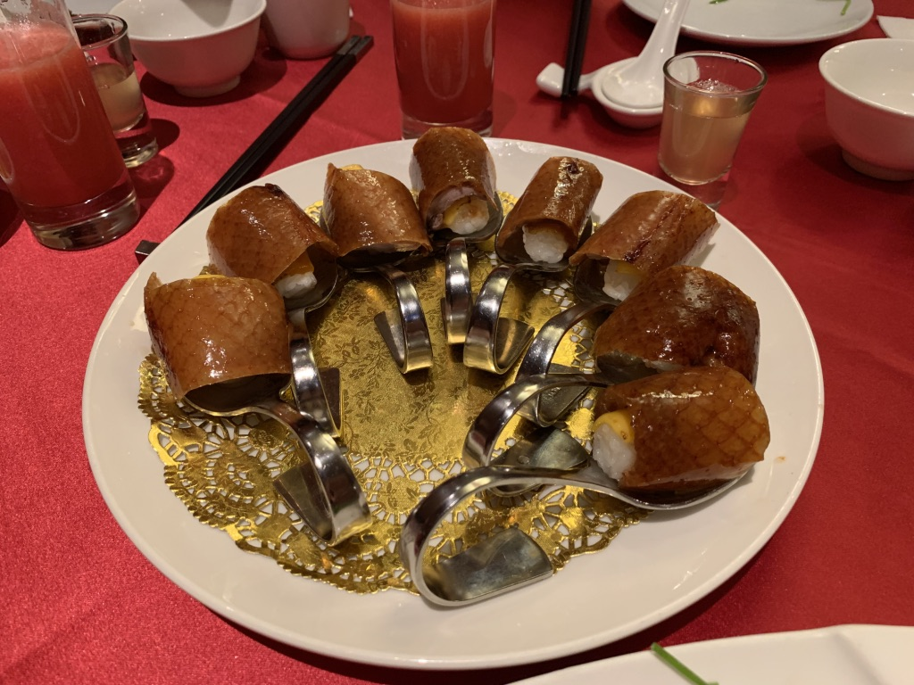
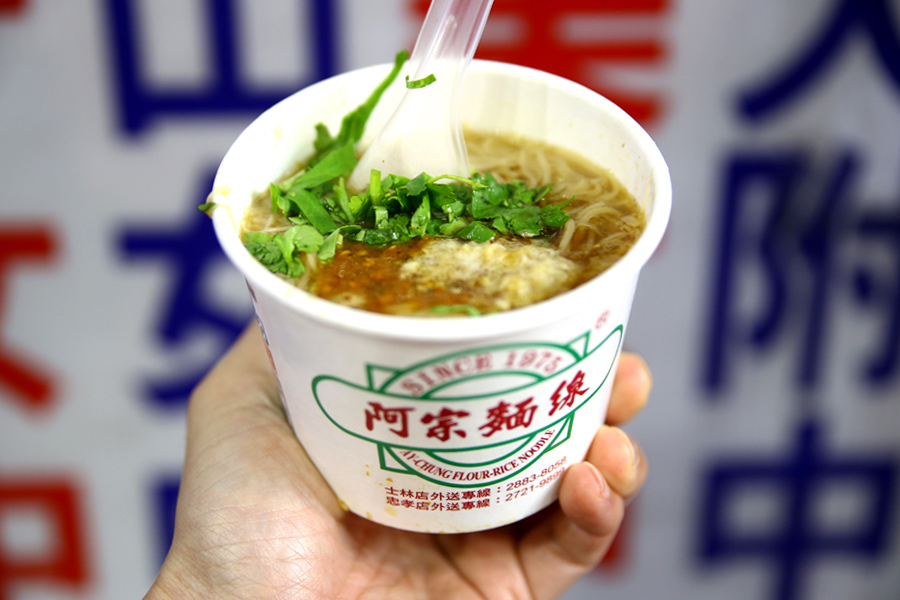
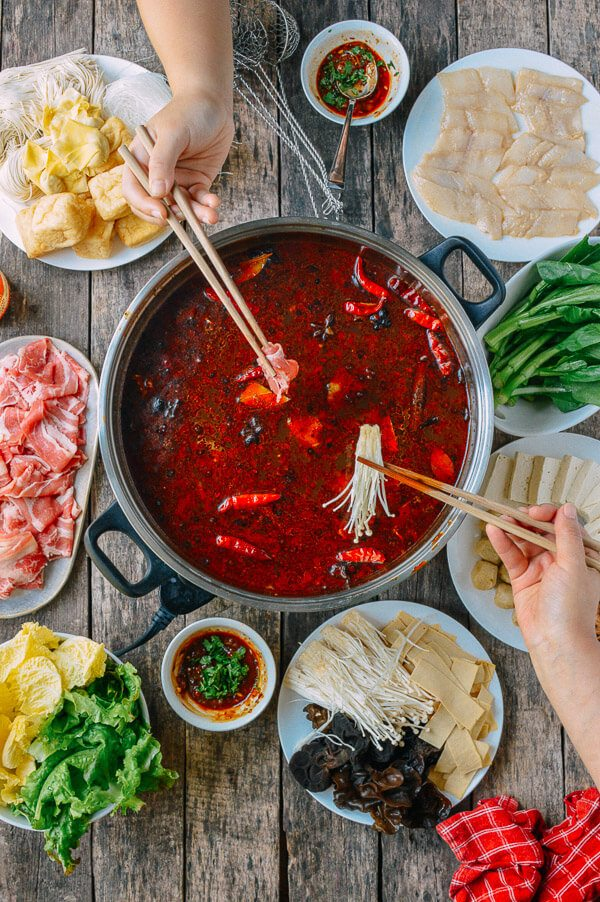
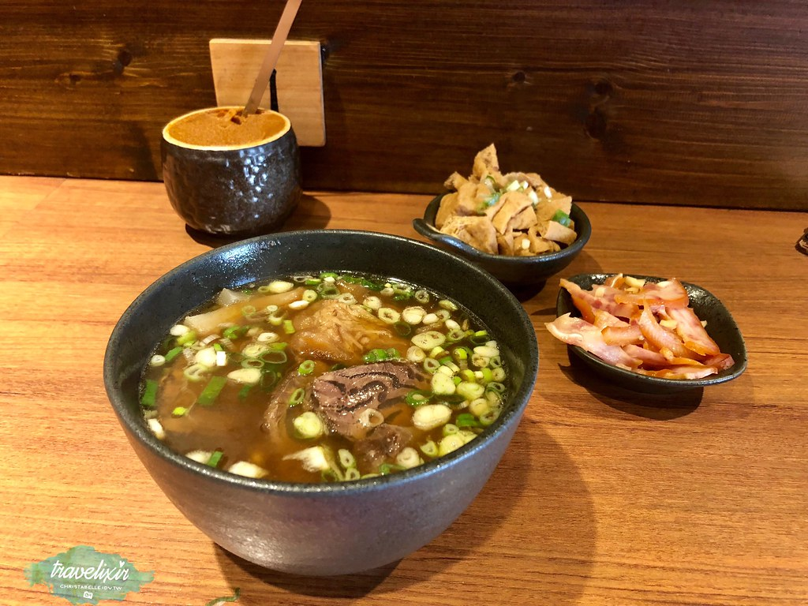
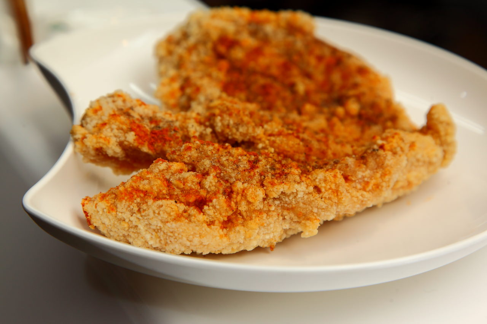
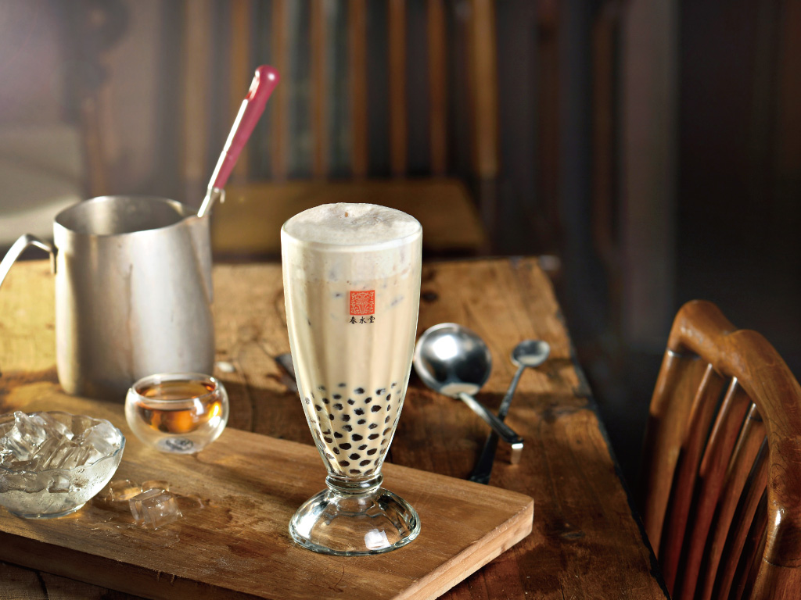
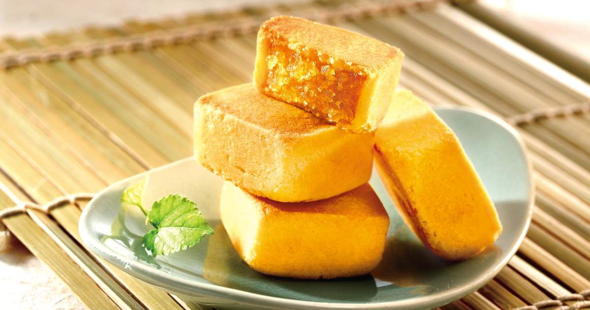
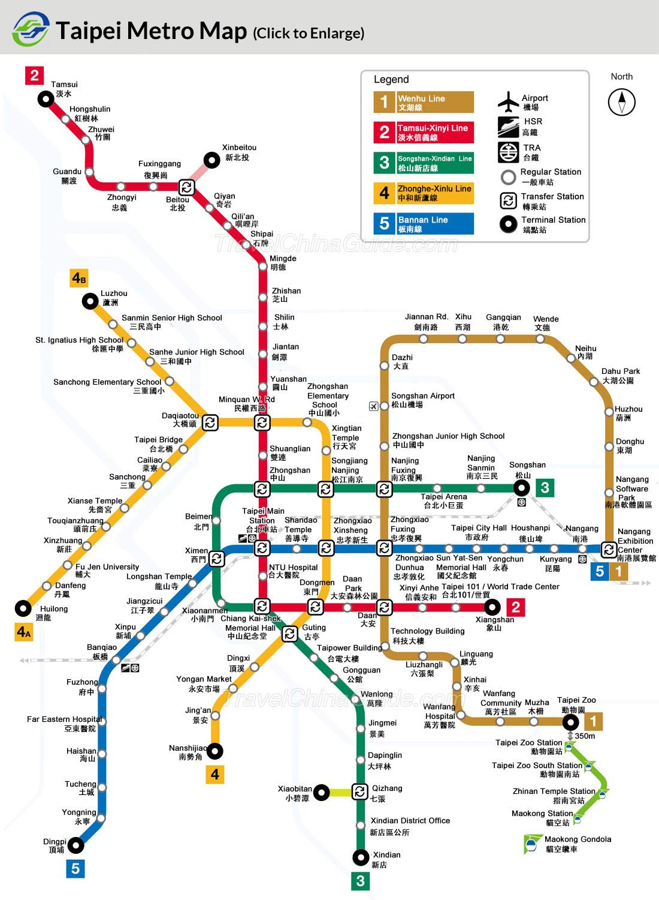

<!--
Developer:chien yun
Date: Oct 20 ,2019
Version:1.3
Description: introduction for tavelling in Taipei
  -->
<!DOCTYPE html>
<html lang="en" dir="ltr"/>
  <head>
    <meta charset="utf-8"/>
    <title>Travel Bird</title>
    <link rel="stylesheet" href="./css/style.css">
    <link rel="stylesheet" href="https://cdnjs.cloudflare.com/ajax/libs/font-awesome/4.7.0/css/font-awesome.min.css">
  </head>
  <body>
    <header>
      <ul>
      <li class="search-container">
        <form action="action_page.php">
        <input type="text" placeholder="Search.." name="search">
        <button type="submit"><i class="fa fa-search"></i></button>
        </form>
      </li>
      <li class="home">
        <a href="index.html">
        
        </a>
      </li>
      <li id="menu-flights">
        <a target=_block href="https://www.skyscanner.ca" class=menuhover>Flights</a></li>
      <li id="menu-hotels">
        <a target=_block href="https://www.agoda.com" class=menuhover>Hotels </a></li>
      <li id="menu-language"> Language
        <ul id="dropdown">
          <li><a href="#">English</a></li>
          <li><a href="#">French</a></li>
          <li><a href="#">Spanish</a></li>
          <li><a href="#">Chinese</a></li>
        </ul>
      </li>
      </ul>
    </header>

    <div id="webwrapper">
      <h2><span>Taipei Travel Guide : Things to Do </span></h2>
      <iframe width="70%" height="450px" src="https://www.youtube.com/embed/PULK4AB4Bz4" frameborder="0" allow="accelerometer; autoplay; encrypted-media; gyroscope; picture-in-picture" allowfullscreen></iframe>
      <div id="videoparagraph">
        <p>Taipei is the capital of Taiwan. Situated at the northern tip of Taiwan, Taipei is located on the Tamsui River; it is about 25 km (16 mi) southwest of Keelung, a port city on the Pacific Ocean. It lies in the Taipei Basin, an ancient lakebed bounded by the two relatively narrow valleys of the Keelung and Xindian rivers, which join to form the Tamsui River along the city's western border .
           The most important places to visit in Taipei are: Yamingshan National Park, Beitou Hot Springs, Building Chiang Kai-shek Memorial, Martyr Shrine, National Palace Museum, Longshan temple, Taipei 101 tower and many more.
        </p>
        <p>source http://bookinghunter.com.</p>
      </div>
      <div class="population">
        <h2>Demographics</h2>
        <p>Taipei City consists of 12 districts with an area of <b>271.7997 </b>square kilometers and a population of more than <b>2.6 </b>million.</p>
        <h2>Culture</h2>
        <p>Taipei has a variety of temples housing Buddhist, Taoist, and Chinese folk religion deities. The Mengjia Longshan Temple, built in 1738 and located in the Wanhua District, demonstrates an example of architecture with southern Chinese influences commonly seen on older buildings in Taiwan.</p>
        <p>When New Year's Eve arrives on the solar calendar, thousands of people converge on Taipei's Xinyi District for parades, outdoor concerts by popular artists, street shows, round-the clock nightlife. The high point is the countdown to midnight, when Taipei 101 assumes the role of the world's largest fireworks platform.[citation needed]
           The Taipei Lantern Festival concludes the Lunar New Year holiday. The timing of the city's lantern exhibit coincides with the national festival in Pingxi, when thousands of fire lanterns are released into the sky. The city's lantern exhibit rotates among different downtown locales from year to year, including Liberty Square, Taipei 101, and Zhongshan Hall in Ximending.
           On Double Ten Day, patriotic celebrations are held in front of the Presidential Office Building. Other annual festivals include Ancestors Day (Tomb-Sweeping Day), the Dragon Boat Festival, the Ghost Festival, and the Mid-Autumn Festival (Moon Festival).</p>
      </div>
      <div class="weather">
        <h2>Weather</h2>
        <table>
          <tr>
            <th colspan="13">Weather in Taipei </th>
          </tr>
          <tr>
            <td>Month</td>
            <td>Jan</td>
            <td>Feb</td>
            <td>Mar</td>
            <td>Apr</td>
            <td>May</td>
            <td>Jun</td>
            <td>Jul</td>
            <td>Aug</td>
            <td>Sep</td>
            <td>Oct</td>
            <td>Nov</td>
            <td>Dec</td>
          </tr>
          <tr>
            <td>High Temp (ºC)</td>
            <td>19</td>
            <td>19</td>
            <td>22</td>
            <td>26</td>
            <td>29</td>
            <td>32</td>
            <td>34</td>
            <td>33</td>
            <td>31</td>
            <td>27</td>
            <td>24</td>
            <td>21</td>
          </tr>
          <tr>
            <td>Low Temp (ºC)</td>
            <td>14</td>
            <td>14</td>
            <td>16</td>
            <td>19</td>
            <td>22</td>
            <td>25</td>
            <td>26</td>
            <td>26</td>
            <td>24</td>
            <td>22</td>
            <td>19</td>
            <td>16</td>
          </tr>
          <tr>
            <td>Rainfall (mm)</td>
            <td>83</td>
            <td>170</td>
            <td>180</td>
            <td>177</td>
            <td>234</td>
            <td>325</td>
            <td>245</td>
            <td>322</td>
            <td>360</td>
            <td>148</td>
            <td>83</td>
            <td>73</td>
          </tr>
        </table>
        <p>Summer (Jun–Aug) is extremely hot, humid and peak travel time. Typhoons are possible Jun–Oct. April and May are raining season. </p>

      </div>

      <div id="food">
        <h2>10 Must Eat Food in Taipei</h2>
        <div class="container">
          <div class="foodcolumns">
            <div class="box">
              
              <span>Xiao Long Bao</span>
            </div>
            <div class="box">
              
              <span>Braised pork rice</span>
            </div>
            <div class="box">
              
              <span>BBQ duck sushi</span>
            </div>
            <div class="box">
              
              <span>Pork Intestine Oyster Noodle</span>
            </div>
            <div class="box">
              
              <span>Spicy hot pot</span>
            </div>
          </div>

          <div class="foodcolumns">
            <div class="box">
              
              <span>Beef noodle soup</span>
            </div>
            <div class="box">
              
              <span>Fried chicken</span>
            </div>
            <div class="box">
              
              <span>Bubble Tea</span>
            </div>
            <div class="box">
              
              <span>Matcha cheese cake</span>
            </div>
            <div class="box">
              
              <span>Pineapple cake</span>
            </div>
          </div>
        </div>
        <a class="source" target="_blank" href="https://girleatworld.net/taipei-food-guide/">More information </a>


      </div>
      <div>
        <h2>Transit </h2>
        <div class="transit">
          <div class="metroimage">
            
          </div>

          <div class="googlemap">
            <iframe src="https://www.google.com/maps/embed?pb=!1m18!1m12!1m3!1d462784.51476123196!2d121.22617659964082!3d25.016963838618352!2m3!1f0!2f0!3f0!3m2!1i1024!2i768!4f13.1!3m3!1m2!1s0x3442ac72bce20a99%3A0x3f6a35cedd0ac2e0!2sTaipei%2C%20Taiwan!5e0!3m2!1sen!2sca!4v1571593451889!5m2!1sen!2sca" width="400" height="300" frameborder="0" style="border:0;" allowfullscreen=""></iframe>

          </div>
          <div class="information">
            <p>This is Taipei Metro website, it can guide you how to get your direction.</p>
            <a class="source" target="_blank" href="https://english.metro.taipei/cp.aspx?n=1BE0AF76C79F9A38"> " Route Map "</a>
            <p>You also can use googlemap to guide u. They are handy.</p>
          </div>

        </div>
      </div>

    </div>
    <footer>
      <a href="contactform.html" id="contact">Contact Us</a>
      <a href="mailto:mikoyun@gmail.com.?Subject=Hello%20again"><i class="fa fa-envelope"></i></a>
      <a target=_block href="https://www.facebook.com/trivagoCA/" class="fa fa-facebook"></a>
      <a target=_block href="https://twitter.com/trivago" class="fa fa-twitter"></a>
      <div class="Copyright">
        Copyright 2019 travelbird | All rights reserved.
      </div>

    </footer>

  </body>
</html>
